Site constructeur Beko/Arçelik : listes de pièces par numéro de série, vues éclatées, schémas, bulletins techniques. Réservé aux professionnels du dépannage.
Identifiant et mot de passe toujours en minuscules · Captcha en MAJUSCULES, puis « Login ».
Notice d'utilisation
1Se connecter
Ouvrez Manusoft avec le bouton en haut de page, puis saisissez l'identifiant et le mot de passe, toujours en minuscules (boutons « Copier » ci-dessus). Recopiez le Captcha en MAJUSCULES et cliquez sur Login.
soit le code marketing de l'appareil (ex. DC7130) ;
soit, de préférence, la référence produit à 10 chiffres (ex. 7182581500).
La référence à 10 chiffres est plus précise : un même code marketing peut correspondre à plusieurs codes produit.
3 caractères suffisent : pour le sèche-linge DC7130, tapez simplement 713. Pratique, car certaines désignations ont des espaces et d'autres non (DC7130 / DC 7130S). La liste des appareils correspondants s'affiche.
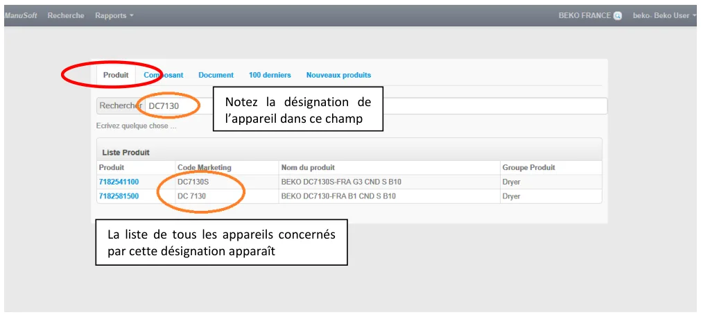
Même principe pour les téléviseurs :
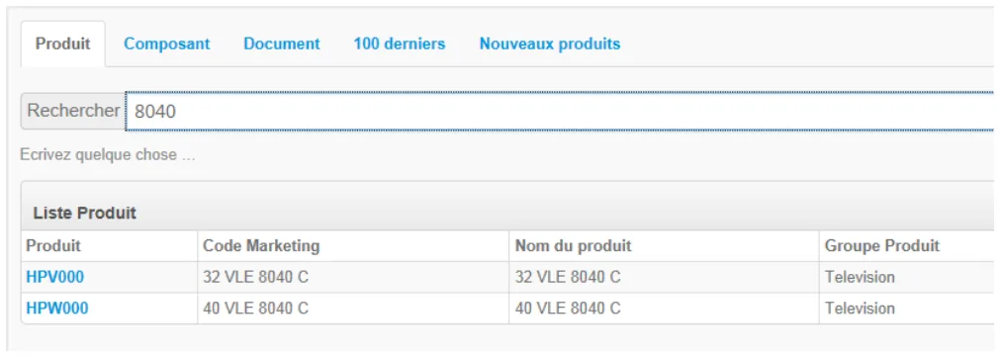
3Documents et liste de pièces par n° de série
Vous avez accès à tous les documents de l'appareil : schémas électriques, vues éclatées, bulletins, codes erreur…
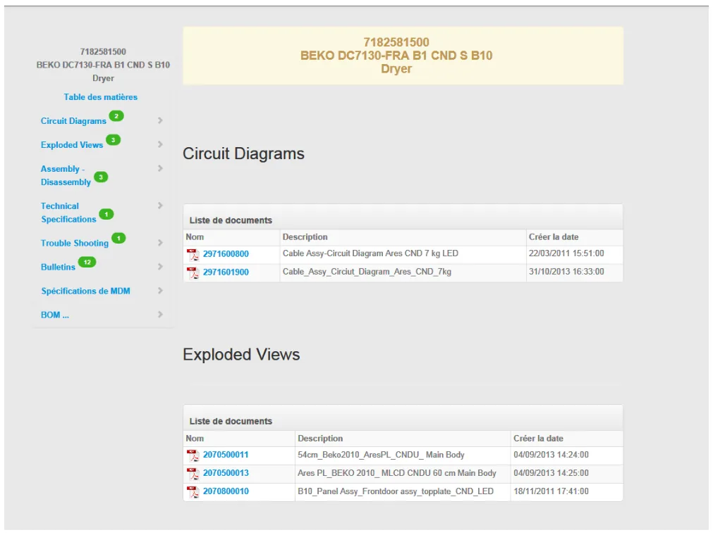
Surtout, vous pouvez obtenir la liste de pièces propre à votre appareil : saisissez les 10 chiffres du n° de série (sans espace ni tiret) puis cliquez sur Télécharger.
Seul le numéro de série garantit les bonnes références de pièces.
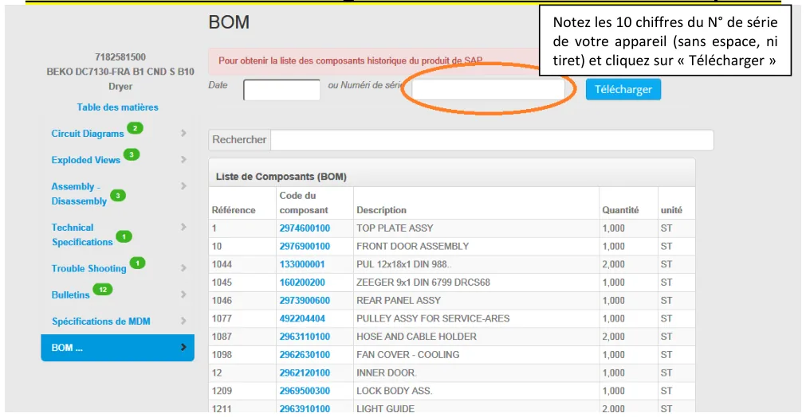
4Lire la liste de pièces
Après « Télécharger », la liste (BOM) s'affiche une fois la barre rouge disparue.
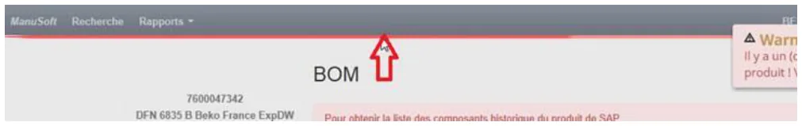
Si plusieurs références apparaissent pour une même désignation de pièce, prenez celle dont la quantité est différente de 0.
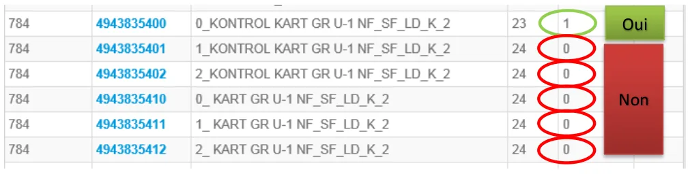
Le champ Rechercher filtre les pièces par mot-clé (ex. water) :
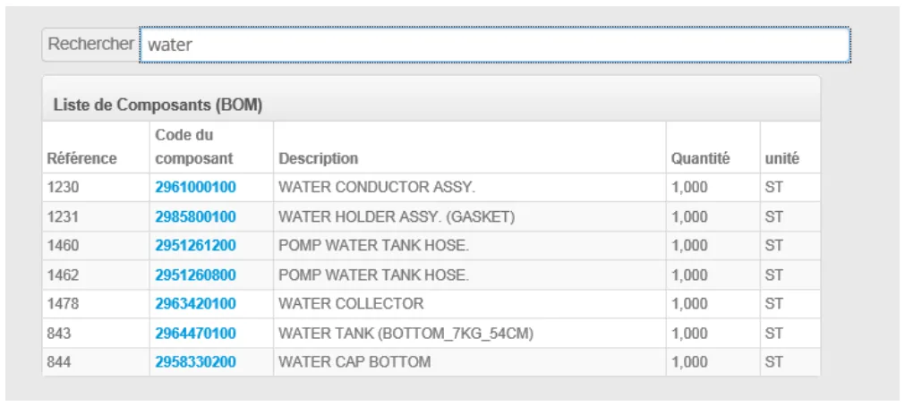
5Vues éclatées : attention
Les références affichées à droite d'une vue éclatée sont génériques : ne pas s'y fier. Après avoir repéré une pièce sur la vue, il est impératif de revenir à la liste de pièces (BOM) du n° de série pour avoir la bonne référence.
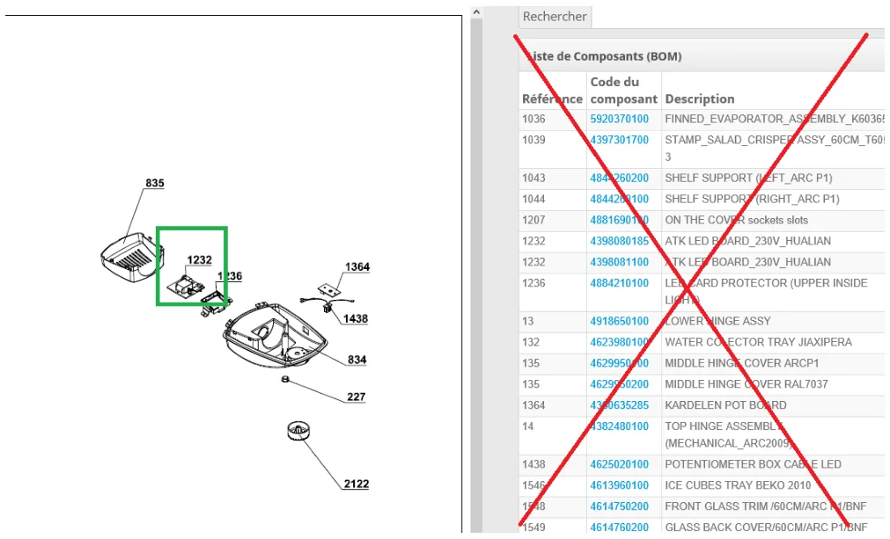
Bien revenir sur cette liste-là :
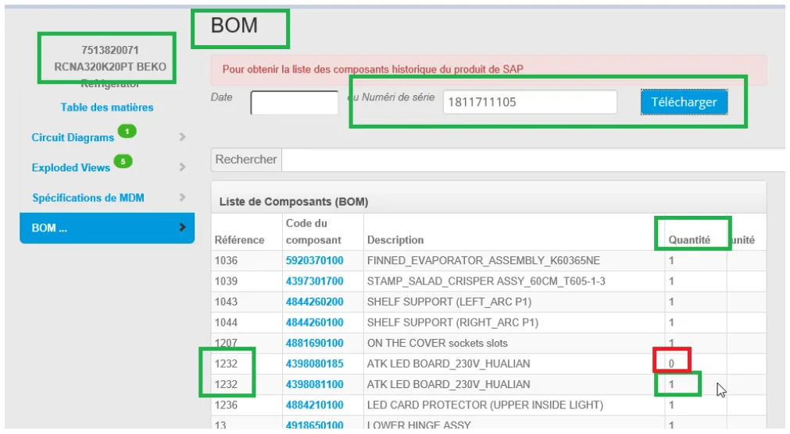
6Sur quels appareils se monte une pièce ? — onglet Composant
Ouvrez l'onglet Composant :
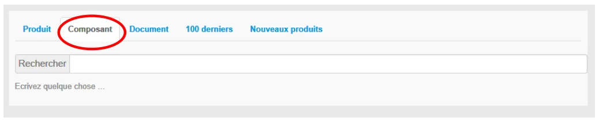
Saisissez la référence de la pièce :
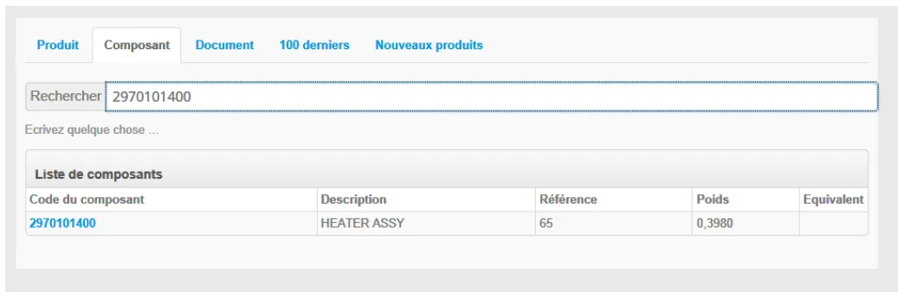
Cliquez sur la référence apparue dans la liste de composants :
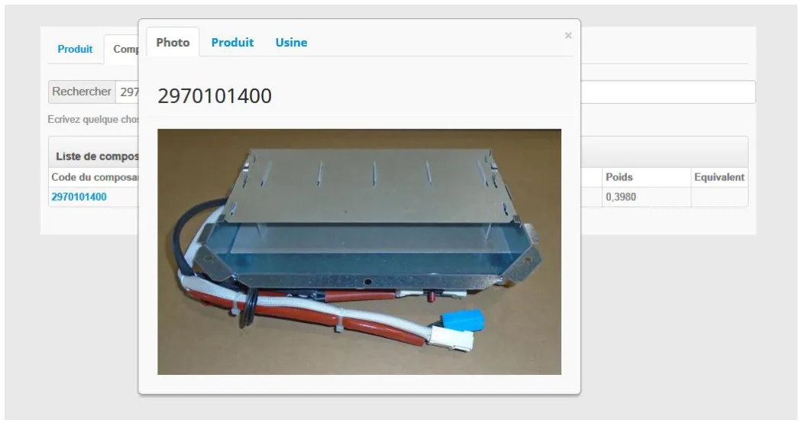
Cliquez sur l'onglet Produit : la liste de tous les appareils comportant cette pièce s'affiche.
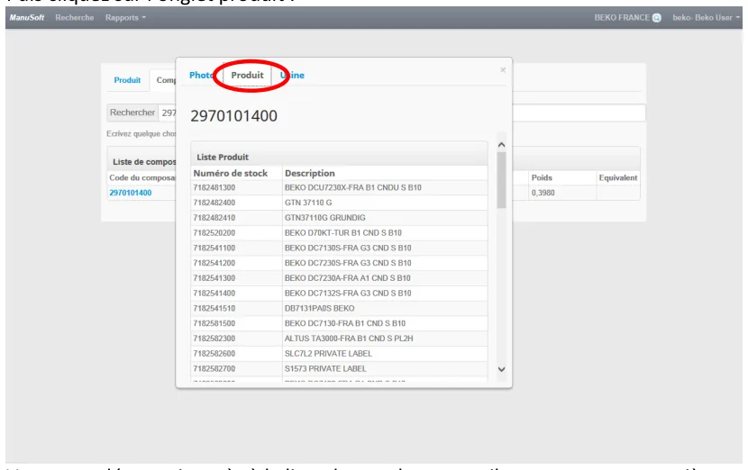
7Pièce « locked » : trouver la référence de remplacement
Une pièce marquée Locked n'est plus disponible. Cliquez sur l'icône de la colonne Equivalent :
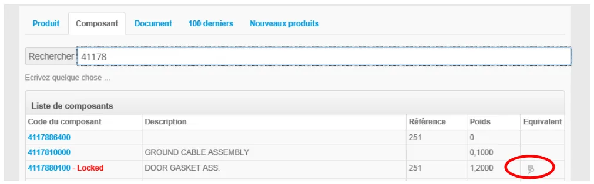
Une fenêtre « Composant équivalent » s'ouvre avec la référence de remplacement :
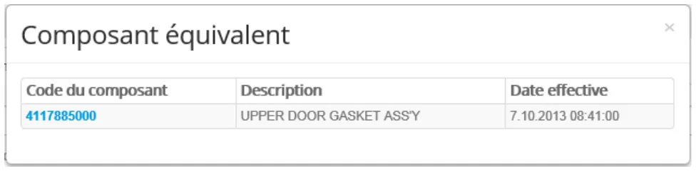
8Bulletins techniques
Chaque produit donne accès à ses bulletins techniques. Certains décrivent un simple running change sans conséquence sur les pièces ; d'autres signalent un changement de référence : pièces 100 % interchangeables, valables à partir d'un n° de série donné, etc. La colonne Code et la légende Code explanation en bas du bulletin indiquent la règle.
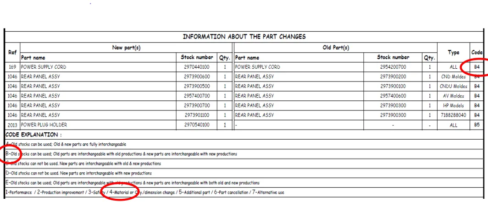
Exemple B4 : les anciennes pièces sont utilisables uniquement sur les anciens appareils, les nouvelles pièces uniquement sur les nouveaux appareils.
En cas de doute, contactez votre interlocuteur Beko « Pièces détachées » habituel.
9Annexe : lire le n° de série d'un appareil Beko (GEM)
Le numéro de série compte 10 chiffres :
1510011212
15 les 2 derniers chiffres de l'année de production
100112 le numéro d'ordre de fabrication, propre à chaque modèle dans chaque usine
12 le mois de production (01 à 12)
Selon les productions, les groupes peuvent être séparés par un espace ou un tiret (15 100112 12 ou 15 – 100112 – 12) : dans Manusoft, saisissez les 10 chiffres sans espace ni tiret.
La plaque signalétique est en général accessible au client. Exception : plaques de cuisson, dont le n° de série est sous le produit une fois installé — une copie de la plaque figure alors sur le manuel d'utilisation.